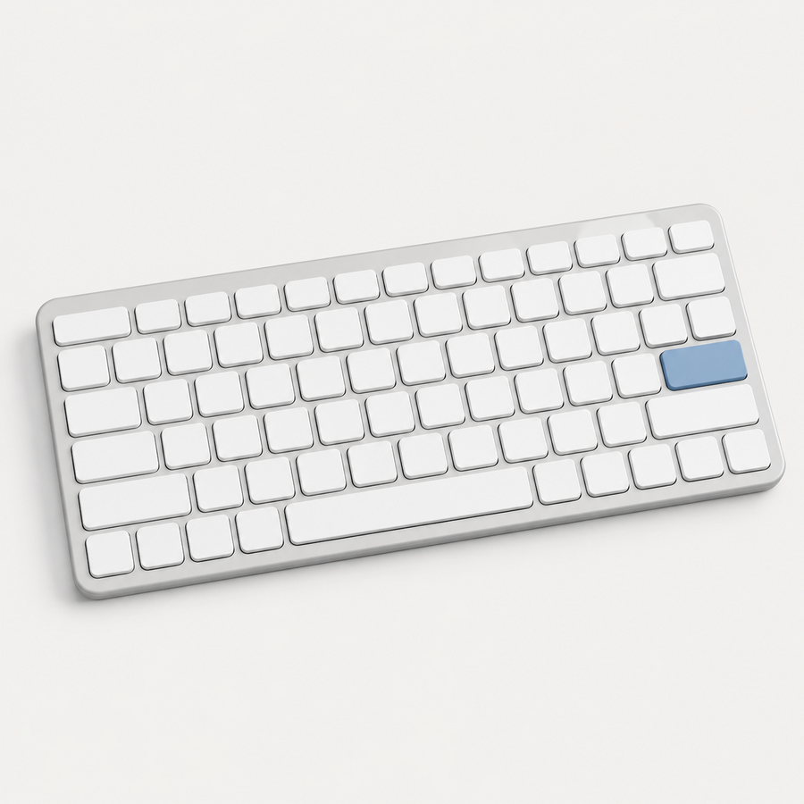

HTML
Estructura de una página
Reconocer títulos, párrafos, enlaces, imágenes, listas y secciones.
Proyecto colaborativo
Esta página presenta una feria académica con actividades de HTML, CSS y JavaScript. También nos permite practicar cómo varias personas pueden mejorar un mismo proyecto utilizando Git y GitHub.

Explorar
Seleccione una categoría para practicar una interacción sencilla con JavaScript.
HTML
Reconocer títulos, párrafos, enlaces, imágenes, listas y secciones.
CSS
Modificar colores, tamaños, espacios, bordes y organización de los elementos.
JavaScript
Responder a botones, mostrar mensajes y filtrar información en la página.
HTML
Utilizar enlaces para desplazarse entre las diferentes secciones.
CSS
Organizar el contenido para que pueda verse en computador y teléfono.
JavaScript
Detectar cuándo una persona selecciona un botón y ejecutar una acción.
Se muestran 6 actividades.
Colaboración
Cada integrante trabaja en una parte y registra sus cambios con Git.
Organiza los títulos, párrafos, enlaces y tarjetas.
Define los colores, espacios y distribución visual.
Programa los botones, el menú y los filtros.
Comprueba los cambios antes de unirlos a la versión principal.
Proceso